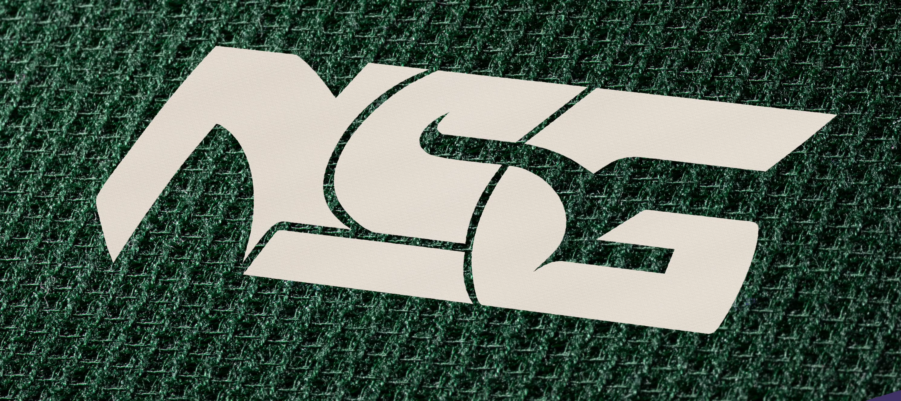
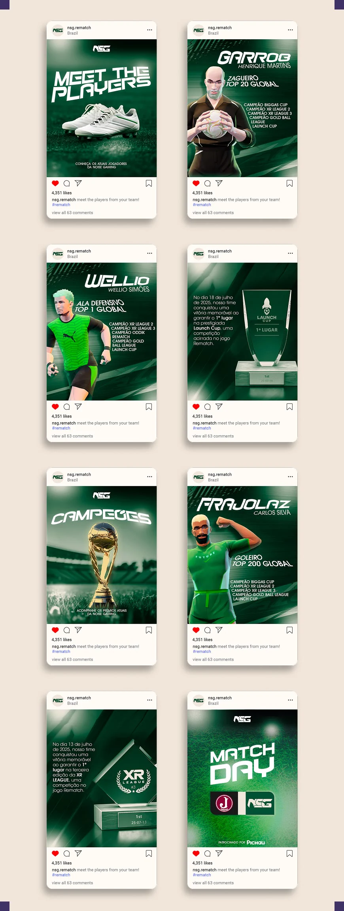
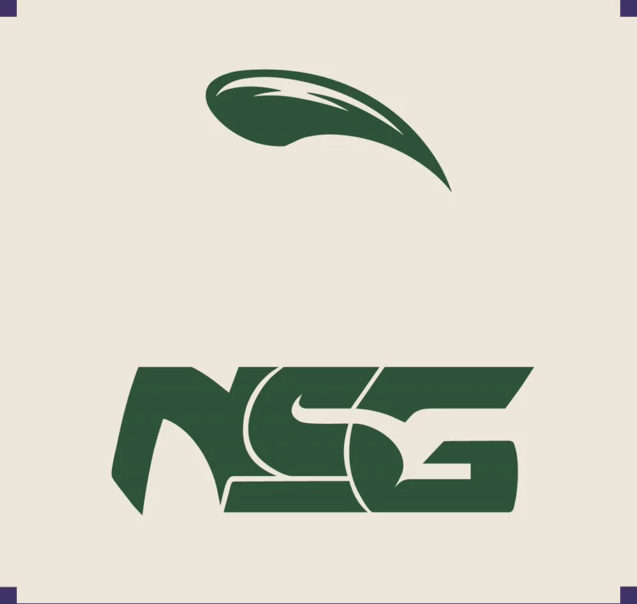
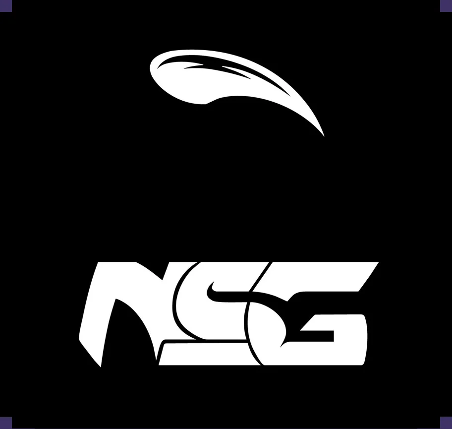

Noise Gaming
A convite do time de e-sports Noise Gaming, tive a honra de liderar o rebranding da organização, com o objetivo de transmitir três pilares fundamentais: elegância, essência e valentia. Para atender às expectativas do público-alvo, a nova identidade visual foi cuidadosamente desenvolvida para alinhar-se às tendências modernas e minimalistas que definem o futuro dos e-sports.
Ano2025-1


